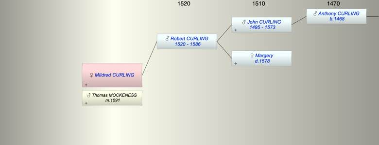

| [Index] |
| MIldred CURLING |
|  |
| m. 21 Nov 1591 Thomas MOCKENESS at St Laurence |
| Parents: |
| Robert CURLING (1520 - 1586) |
| Events in MIldred CURLING's life | |||||
| Date | Age | Event | Place | Notes | Src |
| 1586 | Death of father Robert CURLING (aged 66) | Note 1 | |||
| 21 Nov 1591 | Married Thomas MOCKENESS | St Laurence | Ex MB | ||
| Note 1: buried 4 Sep 1586 at St P ex MW |
| Created on a Mac™ using iFamily for Mac™ on 8 Oct 2023 |